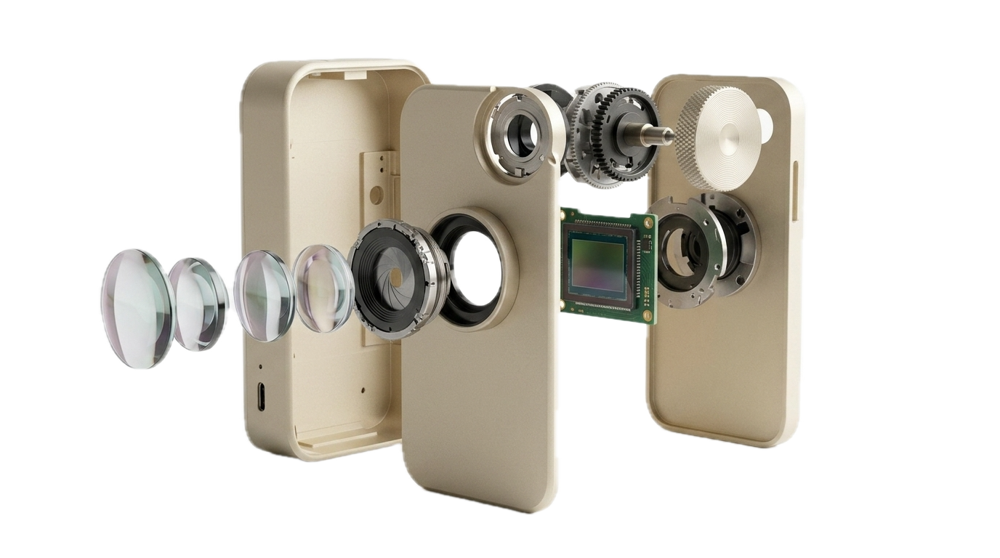
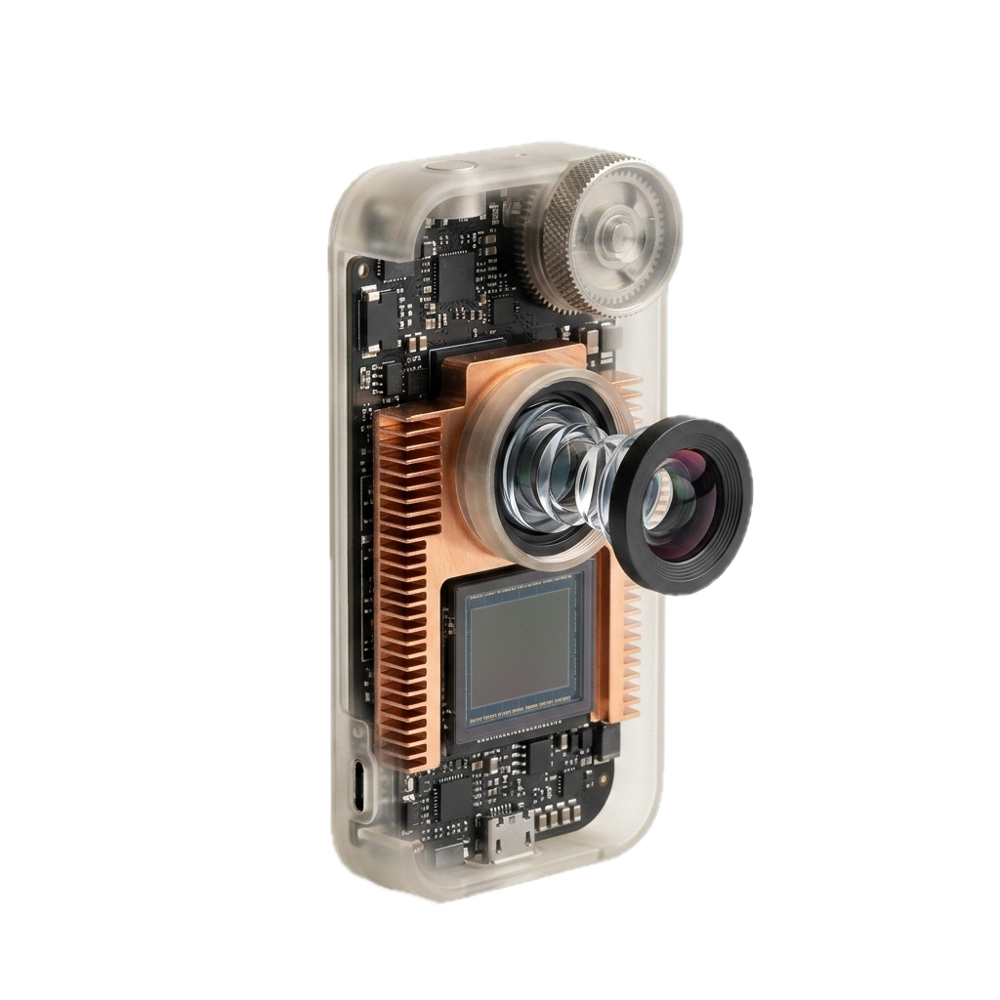

Exploded Engineering & Kalibrierung.
Submikroskopische Justierung aller mechanischen und optischen Baugruppen. Erkunde die Explosionszeichnung des Model 100 und die interferometrischen MTF-Graphen aus unserem Zürcher Reinraum.


Wellenfront-Kontrast (Mitte bis Rand)
Wähle die Ortsfrequenz, um die gemessene Kontrastübertragung von der Bildmitte (0mm) bis zur äußersten Sensorecke (16mm) anzuzeigen.
Champagner-Gold anodisiertes Unibody-Gehäuse
Aus einem massiven Block Luftfahrt-Aluminium gefräst. Thermisch gekoppelt an einen internen Kupfer-Kühlkörper, der die Prozessorabwärme gleichmäßig ableitet und lüfterlose Aufnahmen garantiert.
Laser-interferometrische Endkontrolle
Jedes NoMotion Gerät durchläuft im Zürcher ISO-Klasse-5 Reinraum einen 48-Punkte optischen Achsen-Scan, bevor die Endabnahme erfolgt.
Schweizer Labor-Toleranzen im Detail
| Prüfparameter | Standard Industrie-Toleranz | NoMotion Labor-Standard | Messtechnik |
|---|---|---|---|
| MTF Randschärfe (1-Zoll Sensor) | > 45% Kontrast | > 88% Kontrast | Zygo Verifire™ Laser |
| Auflagemaß-Präzision (FFD) | ± 0.015 mm | ± 0.002 mm Sub-Micron | Mitutoyo Optischer Messtaster |
| Optische Transmission (T-Stop) | 94 – 96% | 99.85% (Nano Multi-Coating) | Spektralphotometer 380–780nm |
| Zylinderachsen-Parallelität | ± 0.15° | ± 0.01° Absolut | Optischer Kollimator Zürich |